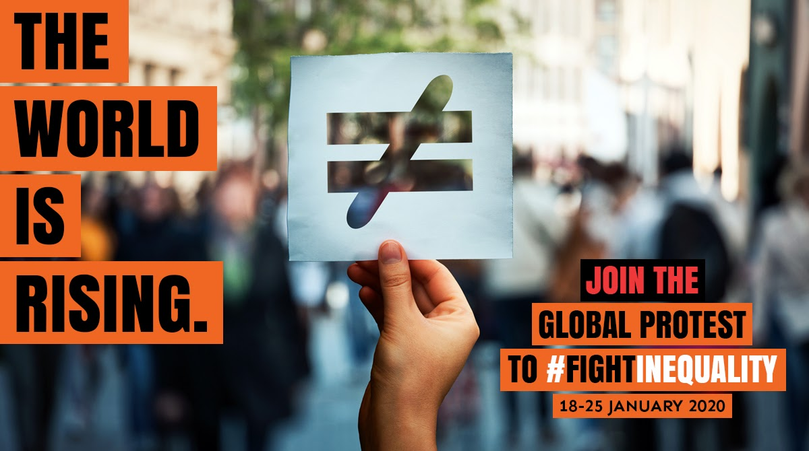

Bernie Sanders 2024
Donate Here. Change will never come without political participation. Join the political revolution today.
Fight Inequality ORG
Link. We represent social movements, NGOs and trade unions. We are deeply concerned about the impact of current shocking levels of inequality, and inspired by people’s collective struggles to build a more equal, more sustainable world.
Feeding America
Link. Formerly known as Second Harvest, Feeding America is the largest domestic hunger relief charity in the United States. Every year, Feeding America provides free food assistance to more than 25 million low income people in the United States.